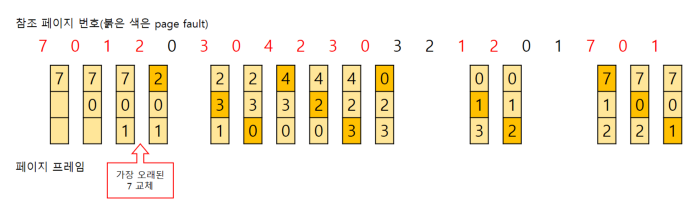
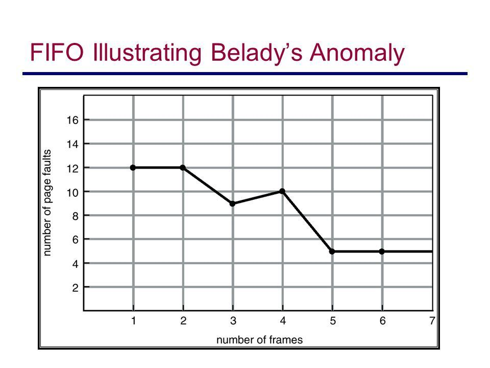
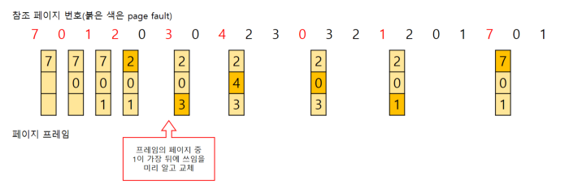
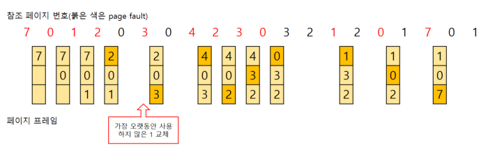
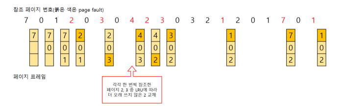
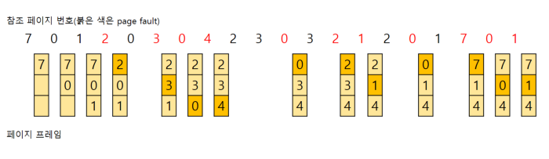

- FIFO 알고리즘은 이름 그대로 가장 먼저 메모리에 올라온 페이지를 가장 먼저 내보내는 알고리즘이다.
- 구현이 간단하지만 성능은 좋지 않은 편이다.
- 들어온 시간을 저장하거나 올라온 순서를 큐를 이용해 저장할 수 있다.
- Belady`s Anomaly 현상이 발생할 수 있다.


- Belady`s Anomaly란 프레임의 개수가 많아져도 page-fault가 줄어들지 않고 늘어나는 현상을 말한다.
- 직관적으로 생각해보면 프레임의 개수가 많아지면 page-fault가 줄어들어야 할텐데, FIFO 알고리즘을 사용하면 그렇지 않을 수 있다.
OPT(Optimal)

- OPT 알고리즘은 앞으로 가장 오랫동안 사용하지 않을 페이지를 교체하는 알고리즘이다.
- 모든 페이지 교체 알고리즘 중 page-fault 발생이 가장 적다.
- Belady`s Anomaly 현상이 발생하지 않는다.
- 프로세스가 앞으로 사용할 페이지를 미리 알아야한다.
- 실제로 구현하기 거의 불가능한 알고리즘이다.
- 실제로 사용하기 보다는 연구 목적을 위해 사용된다.
LRU(Least Recently Used)

- LRU 알고리즘은 가장 오랫동안 사용하지 않은 페이지를 교체하는 알고리즘이다.
- 최적 알고리즘과 비슷한 효과를 낼 수 있다.
- 성능이 좋은 편이다.
- 많은 운영체제가 채택하는 알고리즘이다.
LFU(Least Frequently Used)

-LFU 알고리즘은 참조횟수가 가장 적은 페이지를 교체하는 알고리즘이다.
- 교체 대상이 여러 개라면 가장 오랫동안 사용하지 않은 페이지를 교체한다.
MFU(Most Frequently User)

- MFU 알고리즘은 LFU와 반대로 참조 횟수가 가장 많은 페이지를 교체하는 알고리즘이다.